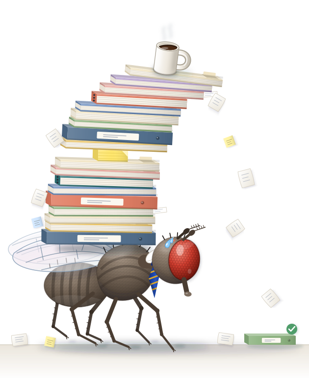

Felipe Fernández · November 2026

Monday, 9 a.m. You have three things left over from yesterday, two emails waiting for an answer, the weekly report, a colleague’s emergency and the two things you meant to finish today. That’s nine things started. You work nonstop, move each one forward a little, and by 6 p.m. you haven’t closed a single one.
Most of us work like this. I wanted to see what goes on there with numbers, and that’s hard to do with people, because nobody lives the same Monday twice. So I built a game.
It’s called Mosca del WIP, it takes a minute and you play it in the browser. The main character is an office fly in a tie, who spends a workday in front of a board with three columns, to do, in progress and done. Before the day starts, you choose how many tasks she can have started at once, from 1 to 10. Teams call that number a work-in-progress limit, or WIP limit. Then she works on her own. She switches tasks, waits for answers from other people and, if she gets stressed, goes out for a smoke.
Inside runs the real map of a fruit fly’s brain, neuron by neuron and with its connections, and the more tasks she has open, the more neurons light up. The office rules, on the other hand, are mine, inspired by studies with people. Each task takes 15 to 35 minutes of work. Switching tasks has a cost, and with 10 open, each minute yields half as much. One in five tasks gets stuck for 30 to 60 minutes waiting on someone else. Then I had the computer play 200 days with each number, from 1 to 10, and took the average. That’s what I call the simulation.
In the simulation, with 2 tasks at once the fly finished 18 a day, and each one took an hour from the moment she started it until she closed it. With 9 she finished half as many, about 9, and each one took almost nine hours, the whole day. The fly with 9 was never idle, but she jumped from one task to another, lost time picking each one back up and went out for a smoke 13 times.
You’d think one thing at a time would be best, but not in the game. With 1, the fly finished 15.9 tasks a day, fewer than with 2, because when her only task gets stuck waiting on someone else, she has nothing to do. With 2 she always has the other one at hand. With 3 she finishes almost the same and also ends the day calm. From 4 on, each extra task makes everything a little worse.
I also tried getting organized in the middle of the day. The fly starts with 10 tasks at once, and at 12:00 the limit drops to 2. What’s started doesn’t disappear, so she takes no new tasks and closes the ones she has. In the game, only at 14:35 does she have two open again. So if you lower your limit, don’t expect the change on the first day.
Finally, I added urgent tasks, which arrive without warning, jump over the limit and get done right away, one at a time. In the simulation, each urgent task cost her about one regular task, and a limit of 2 still finished the most, with one urgent task a day or with five. Raising the limit doesn’t help the urgent task either. With one a day and a limit of 2, each one took 34 minutes from arrival, and with a limit of 10, 52 minutes, because with more things half-done she’s slower at it too.
Modig and Åhlström describe two ways to be efficient in their book This is Lean, from 2012. One is being busy all the time, and the other is keeping the work moving without waiting. By their account, focusing on the first makes the second worse. In the game, the fly with 9 tasks has something to do 100% of the day, but each task spends almost all that time waiting its turn.
The other part is a division, Little’s law, from 1961. The time each thing takes is what you have started divided by what you finish. In a supermarket line, if the checkout keeps the same pace and the line grows, everyone waits longer. In the game it fits exactly, because with 9 open and about 9 finished a day, each task stays open the whole day, and with 2 open and 18 finished, an hour.
You might think this is just a game with a fly. That’s why I looked for studies. In Italy, judges who got more cases at once, by lottery, took longer to close them, and the quality of their rulings didn’t change (Coviello, Ichino and Persico, 2014). With recruiters, a bit of parallel work helped them finish more, but past a point they finished less. DORA’s surveys of software teams say that limiting work in progress helps, especially with a board in plain sight.
None of them gives a number. They measured what happens when there are too many things open, and found more delay, less finished or both. Your team will have to measure its own number.
The game is also a single fly on a single day, with no coworkers to hand work to, so it doesn’t measure people or teams. Her brain is real, but it doesn’t decide anything. And the theory only says that, past a certain point, what gets finished stops going up. That it also goes down, as in the chart, comes from two of my rules, what it costs to switch tasks and the cigarettes.
A low limit helps you finish more, as the chart shows, and helps each thing get done sooner. It also keeps work moving instead of waiting. In the game, with 2 at once each task moves forward 47% of the time it’s open, and with 9, only 9%. And there’s less overload. With 2, the fly ends the day calm, and with 9, overwhelmed. According to DORA, limiting work in progress is a habit of high-performing teams. How much your team gains, its own test will show.
The game doesn’t tell you your team’s number, because the fly works alone and a team passes work around and helps each other. To find it, I suggest four steps.
The first step doesn’t need a meeting. You can count right now how many things you have started.
A sustainable limit, not one thing at a time.
Play at mosca.deliverycraft.ai. You’ll also find there, for free, the WIP limit guide, the report to share and the workshop kit (the kit is in Spanish for now).
You can share this summary as is, crediting the author. Brain data: Male CNS v1.0, CC BY 4.0 (male-cns.janelia.org).